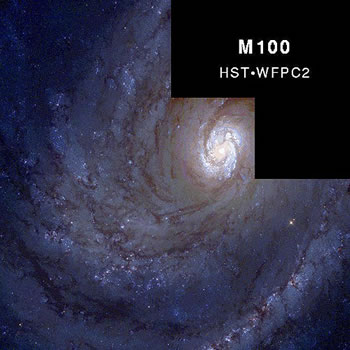

Credit: Trauger/NASA/JPL
The most striking features of any spiral galaxy are the two or more spiral arms sweeping out from either the central bulge or the ends of the galactic bar. Grand design spirals have long, narrow, well defined arms, while those galaxies with short, fragmented arms are termed flocculent spirals.
That spiral arms still exist indicates that they are not rigid nor permanent structures. If they were, they would have been wound tighter and tighter through the differential rotation of the galaxy, and would have disappeared by now given the ages of spiral galaxies. It is now thought that spiral arms arise due to the passage of a density wave around a spiral galaxy. Alternatively, they may be very short lived structures, temporarily created as an area of localised star formation is stretched into a spiral structure by the differential rotation of the galaxy (the self-propagating star formation model). Since spiral arms formed via either of these methods are evolving structures, they do not suffer from the winding problem, and these models can account for all of the spiral structures we see today.
All spiral arms lie within the thin disk of the galaxy. They are delineated by dark dust lanes and highlighted by young, blue stars and luminous nebulae. They range from being tightly wound, faint and smooth in galaxies with little gas and dust, to more open, brighter and clumpy if the galaxy has a higher percentage of interstellar material.
The spiral arms of galaxies are the the main production centres of young stars. The more gas and dust available, the greater the fraction of the galaxy that can be involved in star formation. These high-production galaxies tend to be dominated by their spiral arms and have relatively small central bulges. Their arms contain more clusters of very luminous stars and more luminous nebulae (HII regions). Spiral galaxies that contain very little gas and dust are dominated by their central bulge of older stars and generally have fainter spiral arms. In these galaxies, star formation is not vigorous enough to form clusters of luminous stars so their arms also tend to be smoother.